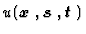
be an objective function which has the minimum point in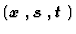
-space.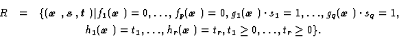
The minimum point of
in R is obtained by computing its extremal points. The extremal points are calculated by finding zero-points of differential of
.
Thus, it is necessary to divide R into sub-regions in which differential of
is continuous.
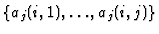
is a combination of j integers in the range of [1,r] and there exist rCj combinations. The suffix i is used to distinguish these combinations and changes from 1 to rCj.If sub-region Rij consists of a finite number of points, they are directly computed. Otherwise, stationary points of and singular points of Rij computed.
The stationary points of
are computed by Lagrange Multiplier Method. Firstly, Lagrange function
 is defined and its stationary points are calculated.
is defined and its stationary points are calculated.
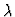
,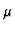
,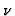
and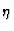
are Lagrange Multipliers. Next, the stationary points which satisfy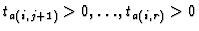
0,\ldots,t_{a(i,r)}>0$"> are selected.In sub-region Rij, a point at which the
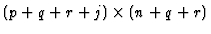
matrix of partial derivatives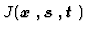
has rank less than (p+q+r+j) is a singular point.
The condition that
has rank less than (p+q+r+j) is equivalent to the condition that the row vectors of
are linearly dependent. Then, at a singular point, Eq. (7) is valid.
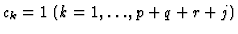
to Eq. (4) and (7) one by one, singular points corresponding to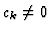
are computed.If a finite number of extremal points or singular points exist, they are directly computed. Otherwise, in order to check whether there is a point which satisfies 0,\ldots,t_{a(i,r)}>0$">, the obtained equation set of extremal points or singular points is regarded as a new constraint set and the above computation is recursively executed.
In the case that there exist an infinite number of extremal points, the objective function has to be replaced by another function
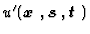
. The new objective function must not be constant under the condition that is constant. Because, since the extremal points of define a locus which makes constant, they are also extremal points of a function which is constant when is constant. That is, if is constant under the condition that is constant, new extremal points of obtained by the recursive computation are completely identical with the old.
The numeric part uses the new objective function
obtained by translation of
(Figure 5).
Figure 6 shows the procedures of computing numerical solutions.